Category nav
Every rule that paints this component, in one file. Colour through a role, geometry straight from a primitive.
What it is
Where you are in the product's own taxonomy, at two depths. A horizontal band of categories under the header on every browse screen, a vertical rail of sub-categories with counts beside a category page, and the same chips as a filter strip on Trending.
The decision inside it is that these are LINKS. A category in this product is a page with its own URL, its own About text and its own empty state, not a filter toggled in place, and the band is what makes that visible: you click a category and you arrive somewhere, with a back button that works.
Anatomy
Which part is which, in the product's own words. Every class named here is one this file styles, and the build fails if it is not.
.cat-nav- the band under the header. One per screen, and it condenses rather than disappearing when the page scrolls..cat-ic- a category's mark. Outline, monochrome, and never the category's own colour, because a category is not an outcome..subcat,.subcat-head- the rail on a category page: a heading and the sub-categories under it, sticky on desktop and a scrolling row of chips at 360..cnt- the per-sub-category count. It is the rail's whole argument: a number tells a person which branch is worth opening before they open it..feed-subfilter- the same chip family used as a filter on Trending, where there is no sub-category to navigate to.
Live
The component in the markup it ships with, quoted from the frozen kit, inside the product's own wrapper and painted by components/index.css alone. Each frame is a page of its own, so the width under the title is a real viewport and the media queries answer to it.
Also rendered inside
The same markup, shown once on the page of the component that owns it. Nothing here is a second copy.
States, as they look
Photographs, not renderings. Each was taken in the specimen linked beside it with a REAL pointer, a real Tab and the mouse button really held down (ui-kit/_verify/states.cjs); nothing here is a state faked with a stand class, which is the rule this section used to be missing because of. One row per distinct FACE: two elements that measure the same at rest are one picture, however many screens carry them, and that grouping is computed rather than chosen. The pictures go stale the moment a rule changes, so each one records the files it was taken from and python3 ui-kit/_states.py fails when their bytes move.
The category you are in: brass ink, a lit mark, and the chip's ground answering. All four faces.

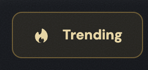
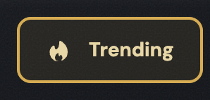

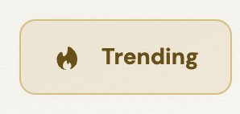
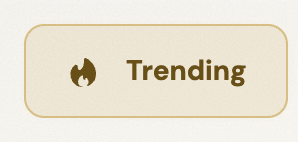
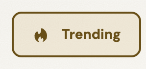
A category you are not in, at rest, hovered, held and focused. One graphite chip family runs through this product, and this is its first member: the same face loadmore and the Load-more control wear.
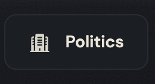
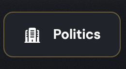
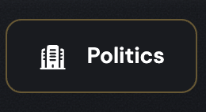
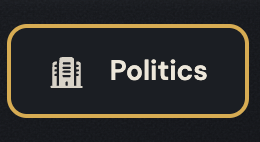
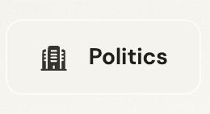
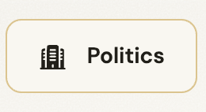
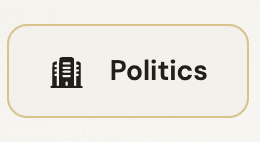
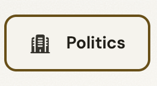
A Trending sub-filter chip. Identical to the category chip on purpose, because it is the same control doing a narrower job on a screen that has no second level to navigate to.

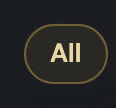
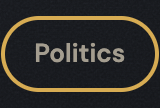
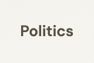
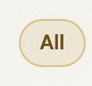
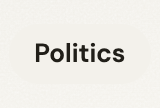
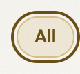
The active row of the sub-category rail, with its count. The count keeps its own quiet ink even when the row is active, so the number is read as data rather than as part of the label.
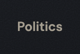
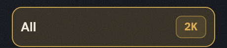

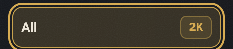

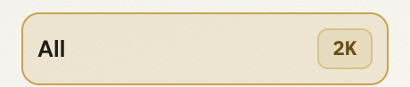

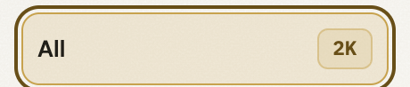
An inactive rail row, all four faces. The rail scrolls, so a row must answer a pointer without changing its height: a rail that reflows under the thumb loses the reader's place.
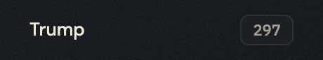

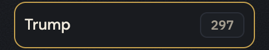
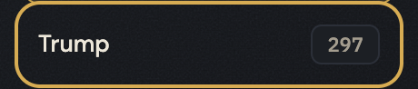
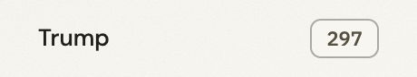

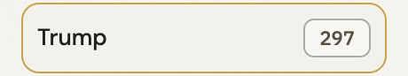
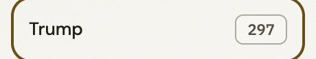
When to use
The judgement a generator cannot read out of css, and the reason ui-kit/authored/catnav.md exists.
On a browse screen, once, directly under the header. The band belongs to screens whose job is to let a person choose an event; a screen a person reached by choosing one does not carry it.
The rail belongs to a category page and only there. It is the second level and there is no third: a sub-category with its own rail would be a taxonomy the product has not decided it has, and R4 says so with a count rather than a preference.
Never on a system screen. 404, 500, maintenance, the cookie screen and the toast catalogue carry the chrome and nothing to browse, and R8 measures that at 0 of 5 both ways: a system screen offers a way out, not a way around.
The sort control is not this component. It looks like the band, it sits near the band, and it belongs to filters on the heading row, because navigating and narrowing are different acts.
The rule, and the anti-rule
One sentence to follow and one mistake worth naming. An anti-rule has to name the component that should have been used instead, or it is a complaint rather than an address, and the build checks that it does.
One band, one rail, and both of them navigate: a chip in this component that changes the current page instead of leaving it is a filter wearing the navigation's clothes.
Never build the feed's sort or frequency control out of these chips: those belong to filters, which draws a dropdown whose label shows its current value, and a chip that looks like a category but silently re-sorts the list teaches a person that the band is unreliable.
Seen: ia/docs/sitemap.md L318, where the wireframe pass moved exactly these controls OFF the band and onto the heading row - "categories are second-level navigation in a sub-nav band directly under the header ... The heading row carries a Kalshi-style filter cluster (feed controls, not navigation)". The separation is in R4's own sentence too, and it is there because the two had been in one strip.
Constraints
What this component may do beside the others: how many of it a screen may carry, and where it may not stand. The 2 rules that name this component, quoted from Rules of use, which is where each one was decided and where its numbers and its source are. This is an extract and not a second copy: gate 26 fails the build if a rule names a component whose page is silent, and equally if a page carries a rule the document does not have.
| rule | what it says | class | check it at a glance |
|---|---|---|---|
| R4 | One category band, one level of sub-categories | COMPOSITION | one band under the header, one rail beside the content, and the sort control in the list head above the list |
| R8 | A system screen carries the frame and not the navigation | CONTEXT | a system screen offers a way out through the chrome and a way out through its state block, and nothing to browse |
Roles it reads
Colour comes in only through these. Change one on the token page and it changes here and on every screen at once.
--bevel-notice--bg-chip--bg-control-hover--bg-pressed--bg-surface--border-hairline--color-action--color-action-lit--edge-groove-dark--edge-groove-light--glow-brass--line-brass-soft--text-brass--text-brass-chip--text-chip-hover--text-muted--text-on-brass--text-primary--text-strong--tint-brass-09--tint-brass-45--tint-hoverClasses
Every class this file styles, and how many of the 105 painted screens carry it. A zero is not automatically dead: the last column says whether the class is built at runtime, shown only in the kit, a leftover of the grey wireframes, used by a course page, or genuinely used by nothing. Gate 30 fails the build on the last kind.
| class | screens | if zero |
|---|---|---|
| .app-case | 105 | |
| .cat-ic | 57 | |
| .cat-main | 77 | |
| .cat-nav | 57 | |
| .cnt | 105 | |
| .feed-inner | 105 | |
| .feed-subfilter | 1 | |
| .subcat | 33 | |
| .subcat-head | 105 |
Where it stands
Written from
The authored half of this page is the one artefact here no gate can read: a sentence cannot be checked for being true. So it names its sources before it says anything, and the build fails when one of them does not exist. Read this first if you doubt a claim above it.
ui-kit/docs/inventory.mdL63 to L65 - three rows, one component: the category band (57 screens, "per-category active;.cat-condensedstrip on scroll"), the sub-category rail.subcat(32, category pages only), and the Trending sub-filter chips (5, marked UV).- R4 in
ui-kit/docs/architecture.md- one band, one level of sub-categories, a rail never nested in a rail, and the sort control is not part of the band. Counted:.cat-navon 57 screens,.subcaton 33, maximum 1 each. - R8 in
ui-kit/docs/architecture.md- a system screen carries the frame and not the navigation: on the five system screens.cat-navand.subcatare both 0. ia/docs/sitemap.mdL318 and L327 - the wireframe pass made categories second-level NAVIGATION in a band under the header, routing to their own pages, and moved the feed's sort and frequency controls onto the heading row instead.ui-kit/docs/backlog.mdS12 and S13 - the rail is a pinned box: itstop:120pxis one of three hand-typed clearances, and the vitrine shows this specimen 69px short because a frame that size IS a short window.ui-kit/_levels.pyRAISE - this component owns.cat-layoutand.cat-main, the page content plate, which is why it is a screen shell rather than a strip of chips.
What the file says
The selectors and the css, for a person about to edit them. To change this component, edit components/catnav.css; to change a value it reads, edit the role in components/tokens.css.
Every state rule, and what it moves
| selector | what moves |
|---|---|
| .cat-nav li[aria-current="page"] button | border-width:2px;font-weight:var(--weight-bold) |
| .subcat button:hover | border-color:var(--color-action);background:color-mix(in oklab,var(--color-action) 10%,transparent) |
| .subcat button:active | background:var(--bg-pressed) |
| .subcat li[aria-current="page"] button | background:color-mix(in oklab,var(--color-action) 18%,transparent);border-color:var(--color-action);font-weight:var(--weight-semibold) |
| .subcat li[aria-current="page"] .cnt | color:var(--text-brass);background:color-mix(in oklab,var(--color-action) 14%,transparent);border-color:color-mix(in oklab,var(--color-action) 45%,transparent) |
| .subcat button:hover | border-color:var(--color-action) |
| .subcat li[aria-current="page"] button | border-color:var(--color-action) |
| .cat-nav li[aria-current="page"] button | background:linear-gradient(135deg,var(--color-action),var(--color-action-lit));border-color:var(--color-action);color:var(--text-on-brass) |
| .cat-main .feed-subfilter button:hover | color:var(--text-chip-hover);background:var(--tint-hover) |
| .cat-main .feed-subfilter button:active | background:var(--bg-pressed) |
| .cat-main .feed-subfilter li[aria-current="page"] button | background:var(--tint-brass-09);border:1px solid var(--tint-brass-45);color:var(--text-brass-chip);box-shadow:0 0 10px -8px var(--glow-brass) |
| .feed-inner .cat-nav button:hover | border-color:var(--line-brass-soft);color:var(--text-strong);background:var(--bg-control-hover) |
| .feed-inner .cat-nav button:active | background:var(--bg-pressed) |
| .feed-inner .cat-nav button:focus-visible | outline-offset:calc(var(--ring) * -1) |
| .feed-inner .cat-nav button:hover .cat-ic | opacity:1 |
| .feed-inner .cat-nav li[aria-current="page"] button | background:var(--tint-brass-09);border:1px solid var(--tint-brass-45);color:var(--text-brass-chip);box-shadow:0 0 10px -8px var(--glow-brass) |
| .feed-inner .cat-nav li[aria-current="page"] .cat-ic | opacity:1 |
The tokens these states read, on both grounds
Neither panel is a screenshot. Each carries data-theme itself, so the token resolves inside it and a role that was given a value in only one theme shows up here as a control that does not move.
--color-actionConfirm betthe ground the control settles onto--bg-pressedConfirm betthe ground the control settles onto--text-brassConfirm betthe label, on the ground this state puts it on--color-action-litConfirm betthe ground the control settles onto--text-on-brassConfirm betthe label, on the ground this state puts it on--text-chip-hoverConfirm betthe label, on the ground this state puts it on--tint-hoverConfirm betthe ground the control settles onto--tint-brass-09Confirm betthe ground the control settles onto--tint-brass-45Confirm betthe ground the control settles onto--text-brass-chipConfirm betthe label, on the ground this state puts it on--glow-brassConfirm betthe ground the control settles onto--line-brass-softConfirm betthe edge this state draws--text-strongConfirm betthe label, on the ground this state puts it on--bg-control-hoverConfirm betthe ground the control settles onto--color-actionConfirm betthe ground the control settles onto--bg-pressedConfirm betthe ground the control settles onto--text-brassConfirm betthe label, on the ground this state puts it on--color-action-litConfirm betthe ground the control settles onto--text-on-brassConfirm betthe label, on the ground this state puts it on--text-chip-hoverConfirm betthe label, on the ground this state puts it on--tint-hoverConfirm betthe ground the control settles onto--tint-brass-09Confirm betthe ground the control settles onto--tint-brass-45Confirm betthe ground the control settles onto--text-brass-chipConfirm betthe label, on the ground this state puts it on--glow-brassConfirm betthe ground the control settles onto--line-brass-softConfirm betthe edge this state draws--text-strongConfirm betthe label, on the ground this state puts it on--bg-control-hoverConfirm betthe ground the control settles ontocomponents/catnav.css
/* components/catnav.css
Component: catnav. Classes: .cat-ic, .cat-nav, .cnt, .feed-subfilter, .subcat, .subcat-head.
Reads: --bevel-notice, --bg-chip, --bg-control-hover, --bg-pressed, --bg-surface, --border-hairline, --color-action, --color-action-lit, --edge-groove-dark, --edge-groove-light, --glow-brass, --line-brass-soft, --text-brass, --text-brass-chip, --text-chip-hover, --text-muted, --text-on-brass, --text-primary, --text-strong, --tint-brass-09, --tint-brass-45, --tint-hover
Stand: ui-kit/catnav.html
Stands on: 105 ui-visual screens (404.html, 500.html, active-bets-empty-new.html, active-bets-empty-resolved.html, active-bets-error.html, ...)
Colour goes through a role, geometry straight from a primitive. No em dash. */
.cat-nav{margin:0}
.cat-nav ul{list-style:none;margin:0;padding:var(--space-8) var(--space-8);display:flex;gap:var(--space-8);overflow-x:auto;flex-wrap:nowrap}
.cat-nav button{padding:var(--space-4) var(--space-8);font-size:var(--text-11);cursor:pointer;white-space:nowrap}
.cat-nav li[aria-current="page"] button{border-width:2px;font-weight:var(--weight-bold)}
/* Five rules used to sit here: the sub-category rail as a sticky 210px column,
its list stacked, its buttons full width. They are the DESKTOP layout, and
they belong to the min-width:900px block at the bottom of this file, which
states all five again with the Vault values. They reached the base scope
because the flat kit this file was split from had lost their @media header,
so at 380px the rail rendered as a vertical list instead of the row of chips
the screens actually show. Removed, not re-wrapped: the block below covers
them. */
/* .cat-layout and .cat-main are in components/patterns/browse-shell.css.
They were here because catnav was the first file that needed them, and
nothing in either rule was about a category. */
.subcat{background:transparent;border:0;border-radius:0;padding:0}
.subcat[hidden]{display:none}
.subcat-head{font-size:var(--text-10);font-weight:var(--weight-bold);letter-spacing:.08em;text-transform:uppercase;color:var(--text-muted);padding:var(--space-8) var(--space-8) var(--space-4)}
.subcat ul{list-style:none;margin:0;padding:var(--space-4);display:flex;gap:var(--space-8);overflow-x:auto;flex-wrap:nowrap;scrollbar-width:none}
.subcat ul::-webkit-scrollbar{display:none}
.subcat li{flex:0 0 auto}
.subcat button{display:inline-flex;align-items:center;gap:var(--space-8);white-space:nowrap;background:transparent;border:1px solid var(--border-hairline);border-radius:var(--radius-pill);color:var(--text-primary);font-family:inherit;font-size:var(--text-13);font-weight:var(--weight-medium);padding:var(--space-8) var(--space-12);min-height:var(--control-36);cursor:pointer}
.subcat button:hover{border-color:var(--color-action);background:color-mix(in oklab,var(--color-action) 10%,transparent)}
/* Press, the axis this file was missing entirely. The rail chip is quiet and flat at rest, so
it takes the system's one quiet pressed ground and has no lift to drop. Equal specificity to
the hover above (0,2,1 both), so it has to sit after it. It reaches exactly as far as that
hover does and no further: the current sub-category below is 0,3,1 and keeps its brass wash
under the finger, which is the honest answer for a chip that points at the page you are on. */
.subcat button:active{background:var(--bg-pressed)}
.subcat li[aria-current="page"] button{background:color-mix(in oklab,var(--color-action) 18%,transparent);border-color:var(--color-action);font-weight:var(--weight-semibold)}
.subcat .cnt{font-size:var(--text-11);color:var(--text-muted);font-family:var(--font-mono);background:var(--bg-surface);border:1px solid var(--border-hairline);border-radius:var(--radius-6);padding:var(--space-2) var(--space-8)}
.subcat li[aria-current="page"] .cnt{color:var(--text-brass);background:color-mix(in oklab,var(--color-action) 14%,transparent);border-color:color-mix(in oklab,var(--color-action) 45%,transparent)}
/* THE RAIL IS CAPPED TO THE WINDOW. Found by lesson 9 of ui-kit/_verify, the
same defect and the same afternoon as the contents rail in toc.css: pinned at
120px and 563px tall, this rail needs 683px of window, so on a 1366x768 laptop
the last two sub-categories were off the bottom of the screen and no amount of
scrolling brought them back, because the page scrolls and a pinned rail does
not. 8 category screens. svh and not vh for the reason written in toc.css. */
@media(min-width:900px){
.subcat{flex:0 0 214px;position:sticky;top:120px;
max-height:calc(100vh - 120px - 16px);
max-height:calc(100svh - 120px - 16px);
overflow-y:auto;overscroll-behavior:contain}
.subcat ul{flex-direction:column;overflow:visible;flex-wrap:nowrap;gap:var(--space-2);padding:var(--space-4)}
.subcat button{width:100%;justify-content:space-between;border-color:transparent;border-radius:var(--radius-10);padding:var(--space-8) var(--space-8)}
.subcat button:hover{border-color:var(--color-action)}
.subcat li[aria-current="page"] button{border-color:var(--color-action)}
}
.cat-nav > ul{max-width:var(--container-max);margin:0 auto;padding:var(--space-8) var(--space-20)}
.cat-nav button{background:var(--bg-surface);border:1px solid var(--border-hairline);color:var(--text-primary);border-radius:var(--radius-pill)}
.cat-nav li[aria-current="page"] button{background:linear-gradient(135deg,var(--color-action),var(--color-action-lit));border-color:var(--color-action);color:var(--text-on-brass)}
@media(max-width:640px){
.cat-nav button{position:relative}
}
.cat-nav{border-bottom:1px solid var(--edge-groove-dark);box-shadow:0 1px 0 var(--edge-groove-light)}
.app-case .cat-nav{background:transparent}
.app-case .cat-nav>ul{max-width:var(--container-max);margin-inline:auto;padding-left:var(--gutter);padding-right:var(--gutter)}
.app-case .cat-nav>ul{scrollbar-width:none;-ms-overflow-style:none}
.app-case .cat-nav>ul::-webkit-scrollbar{display:none}
/* The two-stone plate the strip and the shell stand on is in base.css, with
.feed-inner and the rest of the page frame. It was never the strip's own
skin: it only applies under .feed-inner, so it is the page and not the
component. */
.cat-main .feed-subfilter{margin:var(--space-2) 0 var(--space-16)}
.cat-main .feed-subfilter ul{list-style:none;margin:0;padding:0;display:flex;flex-wrap:wrap;gap:var(--space-8)}
.cat-main .feed-subfilter li{flex:0 0 auto}
/* .cat-main .feed-subfilter a was here. The sub-filter has no links any more:
it filters the page it is on instead of navigating away from it, so its
chips are buttons. The only <a> left inside one is in ui-kit/kit.html, and
the frozen kit is provenance, not product. */
.cat-main .feed-subfilter button{display:inline-flex;align-items:center;min-height:0;cursor:pointer;background:transparent;border:1px solid transparent;border-radius:var(--radius-pill);color:var(--text-muted);font-family:var(--font-body);font-weight:var(--weight-semibold);font-size:var(--text-13);padding:var(--space-4) var(--space-12)}
.cat-main .feed-subfilter button:hover{color:var(--text-chip-hover);background:var(--tint-hover)}
/* The sub-filter chip is transparent at rest and its hover is a white wash, so the press has
to travel the other way: --bg-pressed is opaque and sits below the plate the chip stands on,
which is what pushed IN looks like on this ground. Equal specificity to the hover (0,3,1),
so source order decides. The current chip below is 0,4,1 and keeps its brass, same as above. */
.cat-main .feed-subfilter button:active{background:var(--bg-pressed)}
@media(pointer:coarse){.cat-main .feed-subfilter button,.feed-inner .cat-nav button{min-height:var(--control-44)}}
.cat-main .feed-subfilter li[aria-current="page"] button{background:var(--tint-brass-09);border:1px solid var(--tint-brass-45);color:var(--text-brass-chip);box-shadow:0 0 10px -8px var(--glow-brass)}
.feed-inner .cat-nav{margin:0}
.feed-inner .cat-nav>ul{max-width:none;margin:0;padding:var(--space-2);gap:var(--space-8);display:flex;flex-wrap:nowrap;overflow-x:auto;scrollbar-width:none}
.feed-inner .cat-nav>ul::-webkit-scrollbar{display:none}
.feed-inner .cat-nav li{flex:0 0 auto}
.cat-ic{width:var(--icon-18);height:var(--icon-18);flex:0 0 auto;fill:currentColor;stroke:none;opacity:.9}
.feed-inner .cat-nav button{display:inline-flex;align-items:center;gap:var(--space-12);min-height:0;background:var(--bg-chip);border:1px solid var(--bevel-notice);border-radius:var(--radius-10);color:var(--text-chip-hover);font-family:var(--font-body);font-weight:var(--weight-semibold);font-size:var(--text-14);padding:var(--space-12) var(--space-20);box-shadow:none}
.feed-inner .cat-nav button:hover{border-color:var(--line-brass-soft);color:var(--text-strong);background:var(--bg-control-hover)}
/* This strip is the top of every feed screen, and on mobile it is the only way to change
category: there is no hover there to answer a tap with, so a tap had no reply at all. The
chip carries box-shadow:none at rest, so there is nothing lifted to flatten, and the hover
lightens while the press settles back past rest, which is the right pair of directions.
Equal specificity to the hover above (0,3,1), so this has to stay after it. */
.feed-inner .cat-nav button:active{background:var(--bg-pressed)}
/* THE ONE RING THIS PASS ADDS, and it is a measured defect rather than a preference. The strip
scrolls sideways, so its <ul> is a scroll container and clips at its own padding box; that
padding is --space-2 and the chip fills the content box exactly, top and bottom. The default
ring in base.css sits --ring OUTSIDE the chip and is --ring wide, so it is painted in the
band 2px to 4px out, and every pixel of its top and bottom run falls outside the clip. Read
off the painted page at 1440 and again at 380: the ring rendered as two vertical bars with
no top or bottom edge, on the one control a keyboard user tabs through first. Turning the
offset inward puts the whole ring on the chip's own ground, which is graphite at rest and a
brass wash when the chip is current, and --focus-ring reads on both. Same values as base.css
with one sign flipped, so the ring stays one decision. */
.feed-inner .cat-nav button:focus-visible{outline-offset:calc(var(--ring) * -1)}
.feed-inner .cat-nav button:hover .cat-ic{opacity:1}
.feed-inner .cat-nav li[aria-current="page"] button{background:var(--tint-brass-09);border:1px solid var(--tint-brass-45);color:var(--text-brass-chip);box-shadow:0 0 10px -8px var(--glow-brass)}
.feed-inner .cat-nav li[aria-current="page"] .cat-ic{opacity:1}
@media(max-width:640px){
.feed-inner .cat-nav{margin-bottom:var(--space-16)}
}